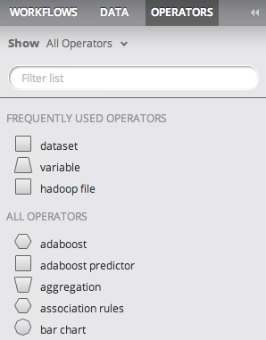
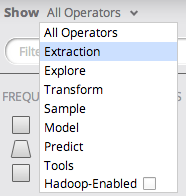

Operator Explorer
Users with the modeler role can add operators to open workflows from the Operators tab of the Explorer.
- Navigating to the Operators tab of the Explorer, the user will see a list the Alpine and custom operators.

- To add an operator to the currently open flow, drag and drop the operator from the Explorer to the flow editor.
- By default, the user will see all operators. Additionally, frequently used operators will appear under the 'Frequently Used Operators' header.
- The user has several methods to filter the operators.
- The user can filter the operators by category by choosing a category from the 'Show' drop-down menu. Additionally selecting the
Hadoop-Enabled check-box at the bottom of the drop-down will add an additional filter to show only operators enabled to work with Hadoop datasets.

- The user can also filter the operators by name by typing in the filter list text box.